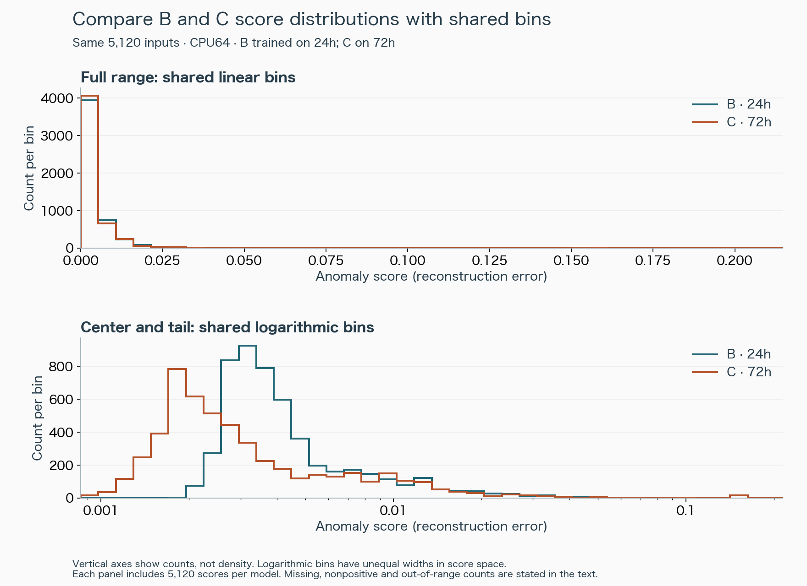
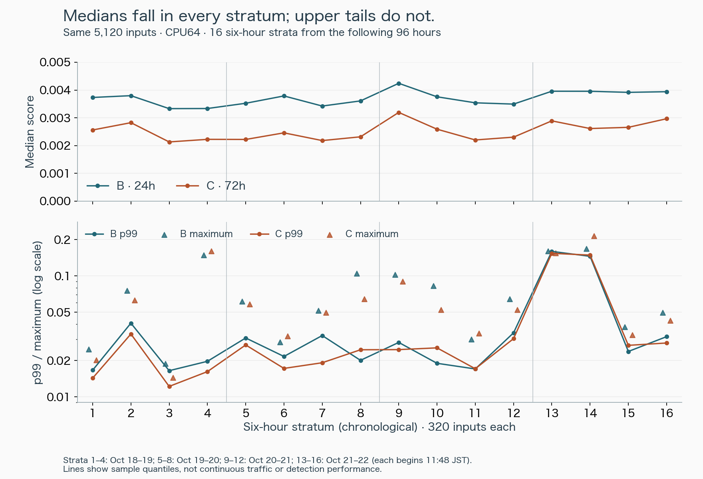

← Experiment overview and chronology
Kitsune experiment
Training conditions, score distributions, synthetic/public-Mirai detection tests and paper-reproduction results.
What is this experiment trying to establish?
What changes when training grows from one day to three, and does it help detection? We first compare scores and rankings on the same out-of-training sample, then examine detection, misses and false alerts using labeled synthetic traffic and a public trace.
Kitsune is network-intrusion-detection research built around KitNET, an ensemble of autoencoders that learns traffic patterns. Our experiment draws on that design and combines 115-feature processing, fixed models and NPU execution on R6S.
The model takes numerical traffic features and produces an anomaly score from reconstruction error. This can highlight departures from learned patterns, but a score alone does not identify an attack. The broader aim is to offload this calculation to the R6S NPU; we first compared how B and C, trained under different conditions, respond to the same inputs on the CPU. This does not isolate the effect of training duration alone.
Original Kitsune paper (Mirsky et al., 2018) · Our CPU/NPU numerical checks
Published detection results in the paper are separate from this experiment using unlabeled household data. A working experiment or successful numerical check does not establish correct attack detection.
Confirmed stages
| Stage | Confirmed scope |
|---|---|
| Seven-day collection and termination | Collection and downstream termination for October 15–22 verified; terminal uninferred rows retained. |
| Retrieval to the development Mac | 37 files, about 33.32GB, retrieved and verified. Six large R6S files were subsequently deleted; the receiver and small records remain. |
| New model C | Results for C trained on the first 72 hours received and reconciled; see the comparison section below. |
Experiment chronology: collection through evaluation
| Date | Stage |
|---|---|
| 2026-10-15 | Independent traffic collection and 115-feature computation began; statistics update per packet, with a representative from each nonempty 100ms interval. |
| 2026-10-16 | Model B trained afresh on the first 24 hours and frozen, with finite hardware-NPU numerical acceptance followed by passive observation. |
| 2026-10-22 | Seven-day collection and retrieval finished. Tests compared 72-hour C distributions, synthetic/public-Mirai detection, the paper gap and inference intervals. |
| 2026-10-23 | Hardware Mirai tests compared 10/20ms and a 100ms wait deadline. Household C also entered passive observation after a hardware numerical check. |
| 2026-10-23 | Then compared shared/per-device models on public data using CPU64, followed by a four-camera/two-group comparison of detection and false alerts. |
Conditions for comparing B and C
| Item | Fixed B | New C |
|---|---|---|
| Training window | 24h | 72h |
| Training rows | 825,646 | 2,432,688 |
| Training method | Reuse the stored model without retraining. | Train afresh once: FM 10,000 rows; AD 2,422,688 rows. |
| Common inputs | 5,120 rows fixed from the following 96 hours | Same unnormalized 115-feature inputs as B |
| Evaluation processing | Freeze its own normalizer, feature mapping and weights | Freeze its own normalizer, feature mapping and weights |
| Comparison arithmetic | CPU64 | CPU64 |
FM (feature mapping) groups features; AD (anomaly detection) trains the model using those groups. CPU64 means reference calculation with 64-bit floating-point arithmetic on the CPU. B and C are project labels distinguishing training conditions.
The following four days are split into 16 six-hour strata. Ten contiguous 32-row blocks per stratum give 5,120 rows, selected before comparison scores were inspected. Insufficient or unsuitable data is not filled with other times or zeros.
This is a diagnostic sample with equal contributions across time strata, not the full four-day distribution or a sample proportional to traffic volume. Prior observation of B also means this is not a prospective blinded final evaluation.
Confirmed seven-day collection results
| Measure | Confirmed value |
|---|---|
| Collection duration | 7 days (604,800.068 seconds) |
| 115-feature rows | 5,625,254 |
| Used for B training | 825,646 |
| Reserved for B hardware numerical acceptance | 32 |
| Scored by B | 4,799,552 |
| Terminal uninferred rows | 24 |
| Retrieved and integrity-checked | 37 files / 33,319,854,683 bytes |
825,646 + 32 + 4,799,552 + 24 = 5,625,254
The final 24 rows do not fill a 32-row batch and remain uninferred without padding. B exited normally, with outputs and execution resources released. Scores from the earlier short-window model A overlap inputs and are not added to these counts.
Saved acceptance reconciles hashes, sizes and declared records for all 37 files. Retrieval completion does not erase known observation-boundary gaps or uninferred rows, and does not guarantee complete traffic coverage or detection accuracy.
Data preservation and freeing R6S storage are separate stages. After all 37 retrieved files were verified, receiver preservation and existing verified identities were rechecked at 20:48 JST on October 22, then six closed large R6S files (about 33.32GB) were deleted. All 37 receiver files, 31 small management records and four derived caches were retained. This does not mean full-file hashes were recomputed during cleanup.
Results of this B/C comparison
Comparison results received and reconciled (completed 2026-10-22 at 15:08 JST)
C has a 34.3% lower median, 8.9% lower p95 and 11.5% lower p99 than B, but a 27.3% higher maximum. The center and upper tail do not change uniformly.
Both models scored this same fixed 5,120-input sample once.
| Metric | B · 24h | C · 72h | Statistic change |
|---|---|---|---|
| Scored inputs | 5,120 | 5,120 | — |
| Median | 0.00371706 | 0.00244109 | -34.3% |
| p95 | 0.01394165 | 0.01270549 | -8.9% |
| p99 | 0.03322186 | 0.02939989 | -11.5% |
| Maximum | 0.16860636 | 0.21465563 | +27.3% |
| Nonfinite results | 0 | 0 | — |
| Uncomputed | 0 | 0 | — |
p95 and p99 are quantiles below which 95% and 99% of the sample lie, using linear interpolation at sorted position (n−1)×q. Changes are ratios of summary statistics, not the median of per-input ratios. The two maxima need not belong to the same input.
C training took 1,541.4506 seconds (about 25m41s); the full job took 1,559.4586 seconds. One chronological pass covered 2,432,688 rows, with saved-model readback verified. Neither model updated parameters or retrained during inference.
How to read these histograms
Start with the positions of the teal and orange peaks in the lower panel. Then use the upper panel to check the full range, including the few large scores.
- Horizontal axis: anomaly score
- This is the error when the model reconstructs the input features. Smaller errors lie to the left; larger errors lie to the right. It is not a scale of attack probabilities.
- Vertical axis: number of inputs in a bin
- Scores are grouped into intervals along the horizontal axis. A taller step means more inputs in that score range. Counts refer to feature rows, not devices, attacks or all packets.
- Teal B and orange C
- B was trained on the first 24 hours; C on the first 72 hours. Both histograms score the same 5,120 inputs selected from the following four days, outside both training windows. They do not compare traffic volumes on different days.
The upper panel uses equally spaced linear bins. Most scores cluster near zero, making the peaks hard to distinguish. The lower panel groups the same results into logarithmic bins: 0.001 → 0.01 → 0.1 are equally spaced tenfold steps. This reveals smaller-score differences while retaining the large values.
The two panels count the same 5,120 scores using different bins, so their peak heights should not be compared directly. In particular, the lower vertical axis counts scores per logarithmic interval, not density per unit of the original score.

Both panels use 40 shared bins and include all 5,120 scores per model. Linear bins span 0 to the shared maximum 0.21465563; log bins span the shared minimum 0.00085234 to the same maximum. Bins are left-closed/right-open, with the final right edge included. Missing, nonfinite, uncomputed, nonpositive and out-of-range counts are zero for both models and both binning methods.
What does the difference between B and C mean?
In the lower panel, the orange C peak lies to the left of the teal B peak. In this sample, many inputs produced smaller reconstruction errors under C. The median falling from 0.00371706 for B to 0.00244109 for C reflects this difference.
Training on three days may have helped the model fit a broader range of traffic patterns, but this is a possible interpretation. B and C use different normalizers and weights, which also affect the score scale. This comparison cannot separate how much each factor contributed.
A few large scores remain in the right tail, and C has a higher maximum than B. The whole distribution has not shifted uniformly left. Histograms group inputs into score ranges; identifying which inputs rose requires a separate paired comparison.
A left-shifted C histogram does not establish safer traffic, fewer false alarms or better attack detection. These household data have no normal/attack ground-truth labels, and no alert threshold was set for this distribution comparison. This plot alone cannot rule out low scores for harmful traffic. What it establishes is that changing training conditions changes responses and rankings on the same inputs. The later sections separately examine detection using labeled synthetic traffic and a public Mirai trace.
C scored lower on 4,484 inputs (87.578%), higher on 636 (12.422%), with no equal scores. Spearman rank correlation was 0.89482664; 39 of the top 52 inputs overlapped (75%). Top-score overlap is not detection agreement or accuracy.

Each 24-hour sample contains 1,280 inputs, running from 11:48 JST to the same time the following day. Values below are B → C.
| Interval | Median | p99 | Maximum |
|---|---|---|---|
| 10/18–19 | 0.00360386 → 0.00231092 | 0.02216498 → 0.01916158 | 0.14836883 → 0.16073991 |
| 10/19–20 | 0.00358716 → 0.00228802 | 0.02782632 → 0.02420930 | 0.10478479 → 0.06449175 |
| 10/20–21 | 0.00371246 → 0.00245874 | 0.02501218 → 0.02755824 | 0.10256801 → 0.09014187 |
| 10/21–22 | 0.00394837 → 0.00275074 | 0.15762513 → 0.15240905 | 0.16860636 → 0.21465563 |
These are within-sample distributions from 16 equally represented strata, not all four-day rows or traffic-weighted distributions. Contiguous 32-row blocks have temporal dependence and are not 5,120 independent trials. Overall quantiles use all sample scores, not averages of stratum quantiles.
B and C share the same feature mapping but have different normalizers and weights. This experiment does not isolate training-window, normalization and weight effects individually. Aggregates do not identify causes or normal/attack labels for high scores.
Can the models detect labeled synthetic changes?
Detection covered a limited range of the synthetic traffic; C superiority was not established.
The aim was to test whether frozen, household-trained B/C models flag traffic changes and also warn on similar normal traffic. We generated fanout, small periodic communication, increased outbound transfer and new peer communication at three intensity levels with ten seeds each. No malware was executed and no traffic was sent onto a live network.
We first fixed a separate threshold for each model using 120 calibration episodes defined as normal. We then scored 120 separate anomaly episodes and 120 matched normal controls once. Each episode has 120 seconds of warmup and 60 seconds of evaluation. One threshold exceedance within evaluation counts as an episode alert.
- 120 normal calibration episodes
- Seal a threshold for each model
- Score separate 120 anomaly + 120 normal episodes
| Episode-level result | B · 24h | C · 72h |
|---|---|---|
| Anomaly detected | 13 / 120 (10.83%) | 11 / 120 (9.17%) |
| Anomaly missed | 107 / 120 (89.17%) | 109 / 120 (90.83%) |
| False alerts on separate normal controls | 7 / 120 (5.83%) | 9 / 120 (7.50%) |
| Alerts on calibration normal | 6 / 120 (5.00%) | 6 / 120 (5.00%) |
Matching calibration alerts to 5% does not guarantee a 5% false-alarm rate on separate normal traffic or at home. The denominators above are 60-second episodes, not packets.
| Family: 10 episodes per intensity | B: low / medium / high | C: low / medium / high |
|---|---|---|
| Fanout / scan-like | 0 / 0 / 0 | 0 / 0 / 0 |
| Small periodic traffic | 1 / 0 / 0 | 1 / 0 / 0 |
| Outbound transfer increase | 0 / 0 / 10 | 0 / 0 / 10 |
| New peer communication | 0 / 0 / 2 | 0 / 0 / 0 |
Both models detected 10/10 high-intensity outbound transfers. However, B alerted on 5/10 matched normal transfers and C on 8/10. Responding to volume and distinguishing anomalous from normal transfer are different; this condition does not establish good discrimination.
Feature, threshold and delay conditions
We computed 115 features from synthetic UDP packet metadata, updating statistics on every packet and scoring the first representative of each nonempty 100ms interval in CPU64. B/C were not retrained and retained their own normalizers and weights. Terminal batches below 32 rows were not padded or scored.
The threshold is the 95th percentile of normal calibration episode maxima; alerts require score > threshold. B uses 0.00541716, C 0.00548976. Median first-exceedance delays among detected episodes are 20.101s for B and 16.901s for C, but the detected sets differ. These are input-event times, not live notification delays.
Detection on public Mirai data and representative selection
Household-trained B/C flagged very few attack-labeled packets in a different environment’s public trace. A separate model M trained on that trace’s normal segment detected about 88.4% under our all-packet conditions.
Mirai is malware that infects IoT devices. We used a public historical trace, without executing malware. The aim was to test a recorded real-world example beyond synthetic changes and check whether selecting one representative per 100ms loses alerts.
Source: UCI Kitsune Network Attack · The provider supplies packet-level benign/malicious labels. The 764,137 packets comprise 121,621 normal-labeled and 642,516 attack-labeled packets. A single label transition does not redefine label semantics, nor did we independently establish each packet’s maliciousness.
B/C retained their household training. M was newly trained on 55,000 valid normal rows from the public trace: 5,000 for feature mapping and 50,000 for model training. Separate normal calibration intervals fixed a 99.9th-percentile threshold before CPU64 evaluation of normal and attack intervals.
| Model / scored input | Attack-labeled alerts (TPR) | Normal false alerts (FPR) |
|---|---|---|
| B · 24h All packets | 83 / 640,864 (0.01295%) | 23 / 50,440 (0.04560%) |
| B · 24h 100ms representative | 26 / 21,894 (0.11875%) | 6 / 12,071 (0.04971%) |
| C · 72h All packets | 84 / 640,864 (0.01311%) | 25 / 50,440 (0.04956%) |
| C · 72h 100ms representative | 28 / 21,894 (0.12789%) | 9 / 12,071 (0.07456%) |
| M · trace-normal training All packets | 566,350 / 640,864 (88.37288%) | 2 / 26,015 (0.00769%) |
| M · trace-normal training 100ms representative | 12,890 / 21,894 (58.87458%) | 0 / 6,240 (0.00000%) |
TPR is the share of attack-labeled packets alerted; FPR is the share of normal-labeled packets falsely alerted. Counts and denominators are shown. Representative rates use only selected packets and do not share the all-packet sample, so differences are not directly performance gain/loss rates.
Matching the same 100ms intervals, the first representative lost alerts in 2,791 of the 15,681 intervals where M alerted on at least one packet (17.8%). This is loss among previously alerted intervals. Statistics still update on every packet; only scored inputs are reduced.
B/C detection was low even with all packets, so representative selection alone cannot explain it. M nevertheless demonstrates additional alert loss from that selection. Training background, duration, normalization and calibration intervals differ between B/C and M; the change to about 88.4% cannot be attributed to a single factor.
Training/calibration/test splits and unsupported input
Splits follow original packet order. B/C use 1–20,000 for feature warmup, 20,001–70,000 for normal calibration, 70,001–121,621 for normal tests and 121,622–764,137 for attack tests. M training ends by packet 56,278; after a gap it uses 70,001–95,000 for calibration and 95,001–121,621 for normal tests. The attack interval is the same.
The current parser does not support 4,412 of 764,137 packets, including 1,652 attack-labeled packets. Table rates are conditional on supported packets; unsupported packets are not replaced by normal labels or zero scores. M’s zero representative false alerts apply only to the 6,240 observed inputs. Adjacent packets/intervals are not independent infection trials.
How we investigated the gap from the paper
Detection of about 88% was established under our conditions. However, the corrected paper’s approximately 99.7% has not been reproduced, and the main cause of the gap remains unresolved.
Paper v2, Figure 9 reports Mirai m=10 TPR of about 0.997 at FPR=0.001 (0.1%). This is a result under the paper’s conditions, not a performance guarantee for our household network.
We tested a pinned author-Python baseline and successively replaced components with our implementation. With thresholds fixed from prior calibration, the author baseline reached 88.13% TPR and 0% FPR; the final current-implementation condition reached 88.43% TPR and about 0.132% FPR. Normal evaluation ranges and supported inputs differ, so their difference is not a direct implementation-factor effect size.
A post-hoc diagnostic also matched test-normal FPR to about 0.1%, closer to the paper’s operating point. Detection still remained around 88%. The values below use test outcomes and are separate from prior-calibration evaluation or independent validation on unseen data.
| Post-hoc diagnostic condition | TPR | FPR |
|---|---|---|
| Author-Python baseline | 88.16403% | 0.09466% |
| Final current-implementation condition | 88.41299% | 0.09685% |
Across 18 conditions we examined feature processing, training, initialization and normalization, including an approximate 52-minute training window and UCI’s supplied 115 features. Detection remained around 88%. These checks do not establish that our implementation is simply wrong or that changing one formula would recover 99.7%.
Conditions for the author-implementation follow-up
The baseline pins the author’s public Python code and uses its Scapy 100-feature path and KitNET. It trains on the first 55,001 normal rows (5,001 mapping + 50,000 training), calibrates a 99.9th-percentile threshold on normal packets 95,001–110,000, then tests normal packets 110,001–121,621 and attack packets 121,622–764,137. These normal calibration/test intervals differ from the earlier M experiment.
The author baseline evaluates 642,516 attack and 11,621 normal packets; the final current-implementation condition supports 640,864 attack and 11,358 normal packets. Intermediate comparisons also align common valid rows while investigating feature and model changes sequentially. UCI’s supplied 115-feature follow-up is a separate branch, not an assumption that the public 100-feature path is identical.
Further checks and the remaining gap
Further comparisons covered the 2018 Python bias update, normal evaluation intervals and saved-length differences between the author demo and UCI trace. Post-hoc diagnostics matching test-normal FPR to about 0.1% changed TPR by at most 0.014007, 0.029883 and 0.031128 percentage points respectively. These factors did not close the roughly 11-point gap. They are post-test diagnostics, not independent evaluation results or new operational thresholds.
The author demo and UCI trace match in times, wire lengths and shared captured contents across all 764,137 packets; 1,550 differ only in saved length. The original paper’s evaluation program, exact training settings and original labels/evaluation population remain unconfirmed. We did not obtain a C++ detector implementation; the paper’s C++ runtime benchmark does not establish the detection experiment’s implementation.
Author implementation · KitNET-py · Paper values refer to the corrected version; an erroneous TPR panel in the original distributed figure is not used as the comparison target.
Inference intervals and how many alerts survive
A follow-up completed at 20:35 JST fixes the current-implementation-equivalent Mirai-normal-trained model and its sealed threshold, then selects first representatives every 10/20/50/100ms from saved scores. No retraining or reinference was performed. It asks how many all-packet alerts survive while reducing scored inputs.
| Selection | Scored-input count | Row reduction | Retained attack-alert bins | Alert retention | Normal-alert bins |
|---|---|---|---|---|---|
| All packets | 652,222 | 0.00% | 15,721 / 15,721 | 100.00% | 15 |
| 10ms | 124,240 | 80.95% | 14,902 / 15,721 | 94.79% | 14 |
| 20ms | 73,312 | 88.76% | 14,551 / 15,721 | 92.56% | 11 |
| 50ms | 39,167 | 93.99% | 13,946 / 15,721 | 88.71% | 10 |
| 100ms | 24,656 | 96.22% | 12,923 / 15,721 | 82.20% | 6 |
20ms retains 92.56% of alert bins with about 88.8% fewer scored inputs. 10ms retains 94.79% with about 81.0% fewer inputs; 100ms retains 82.20% with about 96.2% fewer. In this trace, finer selection retains more alerts while scoring more inputs.
92.56% is not an attack-packet detection rate. It is the fraction retained among 15,721 common 100ms bins alerted by all-packet scoring. Even all-packet scoring does not alert in all 21,894 eligible attack bins. Normal evaluation spans about 7.09 minutes; alert bins are not daily notification counts.
This follow-up has a different normal evaluation range and threshold from the earlier M test and is separate from household-trained B/C. Feature updates remain per packet. Row reduction is not a measured hardware-NPU runtime, power or notification-latency reduction. This describes the October 22 CPU aggregation. Subsequent 10/20ms hardware comparisons and deadline results are reported separately below.
Network scale, environment and what these tests establish
A small household network may differ in the diversity of traffic to learn: not just device counts, but peers, uses, packet volumes, periodicity and weekday/weekend patterns. This experiment does not establish that a smaller network needs only a short training period.
B/C learned household traffic, while the Mirai trace comes from another network. This environment difference is a candidate explanation for low detection, but network scale was not varied in isolation. M learned the public trace’s normal segment and detected about 88.4%, with training duration, normalization and calibration also changed.
The results establish detection/miss/false-alert counts under stated conditions, alert loss from representative selection, and narrower candidate explanations for the paper gap. Household detection performance, generalization to unseen traces, C/M hardware-NPU acceptance and R6S deployment are outside these CPU64 tests.
Hardware NPU: 10ms versus 20ms
On this public trace, 10ms retained more alerts and returned results sooner than 20ms. Most latency came from waiting for 32 rows, rather than NPU computation.
The aim was to connect the preceding saved-score estimates to measured waiting, load and numerical differences. A frozen G6 model trained on the Mirai trace’s normal segment (equivalent to the preceding M condition) and its fixed threshold scored saved 115-feature inputs replayed at original speed. This is separate from household-trained B/C.
Four runs in 20→10→10→20ms order finished normally by 01:32 JST on October 23, 2026. This ABBA order alternates conditions; two repetitions do not establish statistical significance. Each replays the same approximately 51.73-minute trace.
Row latency runs from the scheduled replay time to completion of writing that row’s batch result. p95 is the value within which 95% of rows fall, calculated separately per run. It excludes network transfer and UI rendering.
| Run | Selection interval | Scored / pending | Row p50 (ms) | Row p95 (ms) | Three-core mean occupancy |
|---|---|---|---|---|---|
| 1 | 20ms | 73,312 / 0 | 659.31 | 1352.19 | 0.007128% |
| 2 | 10ms | 124,224 / 16 | 247.23 | 901.25 | 0.011638% |
| 3 | 10ms | 124,224 / 16 | 247.21 | 901.25 | 0.011859% |
| 4 | 20ms | 73,312 / 0 | 659.24 | 1352.17 | 0.007063% |
Occupancy divides devicewide driver job_interval_ns by actual measured window length, averaged over three-core capacity. It is not execution-unit utilization, SDK time or power. Only core0 was busy; cores1/2 measured zero. Allowing three cores does not prove parallel execution across them.
| Condition (both repeats agree) | Retained baseline-alert bins | Retention | Selection loss | Pending loss | Numeric loss | Normal-alert bins |
|---|---|---|---|---|---|---|
| 10ms | 14,899 / 15,721 | 94.7713% | 819 | 3 | 0 | 14 |
| 20ms | 14,551 / 15,721 | 92.5577% | 1170 | 0 | 0 | 11 |
Retention uses the 15,721 common 100ms attack bins alerted by all-packet CPU scoring. It is not detection over all 21,894 eligible attack bins. Normal evaluation covers only about 7.09 minutes and 2,762 bins; the 14/11 false-alert bins are not household notifications per day.
The final 16 rows at 10ms did not fill a batch and remained pending, losing three of the 14,902 alert bins predicted from saved scores. Across 395,072 scored rows, CPU/NPU threshold decisions agreed; same-interval repeats also had zero score differences. CPU/NPU scores nevertheless differed by up to about 0.00205 absolute and 1.19% relative: this is not exact numerical equality.
Waiting, observation coverage and three-core interpretation
Of about 388ms mean row latency at 10ms, about 386ms was batch waiting and 2.2ms processing. At 20ms, about 657ms of 659ms was waiting, with 2.3ms processing. Processing includes pre/postprocessing, not just SDK calls. Sparse inputs produced maxima of about 4.13s at 10ms and 4.27s at 20ms.
The main occupancy estimate uses 309 fully contained windows per run, covering about 99.75% of time. Boundary windows bring observation coverage to 100%, but unknown busy locations within them are not prorated. Alternate graph shapes or a three-worker design remain offline candidates and were not mixed into these runs. Output buffers and SDK contexts were released in every run.
Reduce batch waiting with a 100ms deadline
Using a 100ms wait deadline for the oldest pending row reduced same-row p95 latency to about 103ms. This does not guarantee results within 100ms.
Two fixed windows from the preceding 10ms condition—120 normal seconds at the beginning and 120 attack seconds at the end—were compared without changing the model, normalization, threshold or SDK. The table aligns identical input rows; short-window p95 values are not mixed with full-trace p95 values.
- First pending real row sets
deadline = admit time + 100ms - Flush immediately at 32 rows
Later inputs do not extend the deadline - Flush a partial batch at the deadline
Count and record real rows only
The NPU shape remains fixed at 32 rows. Missing slots repeat the final real input, and their outputs are discarded. Per-row independence was checked structurally and through all 32 prefix lengths on hardware, totaling 528 real rows. That probe found zero padding-induced score differences or CPU decision differences.
| Same-row comparison | Rows | Old full32 p95 (ms) | 100ms deadline p95 (ms) |
|---|---|---|---|
| Normal: first 120s | 1,336 | 2963.55 | 102.57 |
| Attack: last 120s | 5,518 | 851.01 | 102.53 |
All 6,870 rows were scored: 1,336 normal and 5,534 attack, with none pending. This includes the 16 formerly pending tail rows, 11 of which alert. The 5,518 attack rows in the table are the subset comparable under both methods.
CPU alert decisions agreed on all 6,870 rows; scores also matched the old NPU on comparable rows. The three normal-alert bins were unchanged. Among 703 baseline-alert bins fully inside the attack window, retention increased from 666 to 668. The three bins lost over the full trace and two recovered inside this short window have different evaluation boundaries.
Maximum observed row latency was 112.277ms; batch waiting exceeded the deadline by up to 10.014ms. The 100ms limit starts at consumer admission and bounds intended waiting, not feature-publication delay, OS wakeup, computation, writing or notification.
Trade-offs and limits of this finite test
Deadline flushing increases NPU calls. Three-core mean job occupancy was 0.049146% in the normal window and 0.066690% in the attack window, with only core0 busy. Each main estimate uses 11 fully contained windows, about 91.84% of time; boundary-inclusive observation covers 100%. These short-window rates are not directly comparable to full-trace means. Against old run2, 6.59% of normal and 16.47% of attack matched rows became slower; not every row improved.
Two two-minute windows do not establish long-term operation, other traffic, a universal latency bound or detection accuracy. Pending work after a failure is not relabeled as success; flushing real tail rows at an explicit normal finite-source end is a separate condition.
Household-trained C: hardware differences and passive observation
October 23 receipts confirm a 32-row hardware check and passive observation with household-trained 72-hour C. The Mirai alert threshold is not transferred; this stage observes scores only.
The existing C model has 115 features and 21 groups. A sealed 32-row block outside training was compared between CPU64 and the R6S NPU FP16 path. This is not new training or substitution with Mirai’s G6 model.
| Finite-check measure | Result |
|---|---|
| Input rows | 32 |
| Maximum absolute difference from CPU64 | 0.0001571359 |
| Maximum relative difference from CPU64 | 12.2272% |
| Median relative difference | 4.6293% |
| Direction | NPU > CPU on all 32 rows |
| Threshold / alert decision in the October 23 check | Unset (null) |
The measured difference is recorded explicitly rather than dismissed as negligible. No clear input type/layout contract mismatch was found, but the entire difference is not attributed solely to FP16 rounding. Prior FP32 checks used different generated inputs and do not directly explain these 32 observed household rows.
How much does a 12.23% maximum relative difference matter?
The October 23 comparison established numerical differences on 32 rows for passive observation. Equivalence to CPU alert decisions remains unevaluated. A 12.23% maximum alone establishes neither unusability nor harmlessness.
For each row, relative difference is |NPU score − CPU score| / |CPU score| × 100; 12.23% is the maximum over 32 rows. It does not mean 12.23% more danger or a 12.23-percentage-point fall in detection. Scores are traffic reconstruction errors, not attack probabilities.
The maximum absolute difference is about 0.00015714. A small CPU score can turn a small numerical difference into a large percentage. However, NPU scores were higher on all 32 rows, with a median relative difference of about 4.63%; this is not treated as one tiny-score outlier. The maximum absolute and relative differences need not occur on the same row.
The practical question is whether an alert threshold lies between the CPU and NPU scores. Scores on the same side give the same decision; a threshold between them changes it. This household-C check had no alert threshold, so the number of changed decisions was not measured.
For inputs shifted upward as observed here, reusing a CPU-calibrated threshold could produce more alerts. Ground-truth labels are needed to tell false alarms from useful detections. Neither the direction nor proportion is guaranteed on other inputs; rankings and interpretation of small changes may also be affected.
| Use | What current evidence supports |
|---|---|
| Observe scores on the same NPU path | Exploratory observation on its own scale, separate from CPU64; small-change and rank preservation remain unverified. |
| Alert using a CPU threshold | Direct reuse is not established. The October 23 comparison did not set or compare alert decisions, so their differences were not measured. |
| Drive automated blocking | A 32-row numerical check alone cannot establish suitability. |
To evaluate detection performance, calibrate on normal data through the deployed NPU path, fix the threshold in advance, then evaluate false alarms and misses on separate normal/anomalous data. The median 4.63% is not a uniform correction, and the observed 12.23% maximum is not a future error bound. No new threshold or correction is set by this explanation.
Subsequent saved acceptance covers C score updates, history and measured NPU-load display through the dashboard. The new passive pipeline uses the batch-wait deadline and bounded history. It is a new start, distinct from the completed seven-day collection; C72 NPU FP16 histories are not mixed with CPU64 or older model scales.
These are the October 23 numerical-acceptance conditions. October 26–27 added frequency observation against a display/reference value of 0.22, separately from operational alert calibration. Read the follow-up observation and counting correction →
Without alert-decision comparisons in this October 23 check, C has no claim of zero CPU/NPU alert-decision differences, detection rate or false-alarm rate. This does not establish automatic blocking or validated detection performance. The receipts establish start and finite acceptance, not long-term stability or a reboot-recovery test.
A separate record later that day confirms scoring resumed after manually loading the NPU driver and restarting the service following storage expansion. See recovery after storage expansion. This is separate from automatic recovery or long-term stability.
Later October 29 records verify automatic recovery after a normal reboot and Pi 5 notifications. Neither establishes CPU/NPU alert-decision equivalence or household detection performance.
Are per-device models better? A three-device comparison
A doorbell and a thermostat have different normal traffic. Would learning each device separately make anomalies easier to detect? We compare three configurations to separate the effect of individual models from the effect of individual alert thresholds.
| Configuration | What is shared or separated |
|---|---|
| 1. Shared model + shared threshold | Pool normal training rows from three devices into one model and one threshold. |
| 2. Shared model + per-device thresholds | Reuse model 1; derive separate thresholds from each device’s normal calibration rows. |
| 3. Per-device models + per-device thresholds | Learn normal traffic separately and score each device with its own model and threshold. |
For these three devices, configuration 3 did not establish an advantage. It detected 13 more attack rows than configuration 1 but produced 81 more false-alert rows. We do not treat the tiny detection-rate difference as a statistically established improvement.
This is a CPU64 evaluation of public per-device feature CSVs with our current KitNET-style implementation, using neither household model C nor the R6S NPU. It reads recorded data; no malware was run or attack traffic sent.
Device comparison: conditions and results
The devices, selected before results were examined, are a Danmini doorbell, an Ecobee thermostat and a SimpleHome XCS7_1003_WHT security camera. In each normal file’s original row order, the first floor(50%) is used for training, the next floor(25%) for threshold calibration and the remainder for normal testing.
| Input or rule | Condition |
|---|---|
| Normal-row split | Training 41,094 / calibration 20,547 / test 20,548 (82,189 total) |
| Attack test | All 1,679,093 rows of Mirai ack, scan, syn, udp and udpplain |
| Primary threshold | Seal the nearest-rank 99.9th percentile of normal calibration scores; alert when score > threshold. |
| Training-row equality | Both configurations use the same training-row set once. Each model has its own normalizer, feature mapping and weights. |
Thresholds were not tuned against attacks or test outcomes. A 99.9th-percentile calibration threshold does not guarantee a 0.1% false-positive rate on separate normal test data. Rates below count feature rows, not infected devices or daily notifications.
| Configuration | Detection rate TPR | Missed rows FN | False-alert rows FP | False-positive rate FPR |
|---|---|---|---|---|
| 1. Shared + shared | 99.9914% | 144 | 33 | 0.1606% |
| 2. Shared + per-device thresholds | 99.9936% | 107 | 49 | 0.2385% |
| 3. Per-device + per-device | 99.9922% | 131 | 114 | 0.5548% |
Detection rates use 1,679,093 attack rows; false-positive rates use 20,548 normal test rows. We show actual misses and false alerts because near-perfect detection rates can hide differences.
| Device | Normal test rows | False alerts: 1 | False alerts: 3 |
|---|---|---|---|
| Danmini doorbell | 12,387 | 9 | 9 |
| Ecobee thermostat | 3,279 | 19 | 28 |
| SimpleHome security camera | 4,882 | 5 | 77 |
The increase is especially visible for the camera: 5 → 77 false-alert rows. These conditions do not support the expectation that device specialization always reduces false alerts. Splitting training also changes the amount and order seen by each model, so specialization alone cannot be assigned as the cause.
Follow-up: four cameras in two groups
Next, we restricted the devices to four security cameras and split them into two predeclared manufacturer/series groups: SimpleHome XCS7_1002_WHT / XCS7_1003_WHT and Provision PT_737E / PT_838. This does not test automatic clustering or routing of unknown devices.
Normal rows: 113,390 training / 56,694 calibration / 56,697 test. Attack rows: 1,893,455 across the same five Mirai types. The primary threshold rule remains 99.9%. The population differs from the three-device experiment, so these numbers are not a before/after improvement.
| Configuration | Detection rate TPR | Missed rows FN | False-alert rows FP | False-positive rate FPR |
|---|---|---|---|---|
| 1. Shared + shared | 99.9726% | 518 | 56 | 0.0988% |
| 2. Shared + group thresholds | 99.9748% | 477 | 72 | 0.1270% |
| 3. Group models + group thresholds | 99.9430% | 1,080 | 62 | 0.1094% |
Pooling all rows, configuration 1 → 3 changes misses from 518 → 1,080 and false alerts from 56 → 62. The groups move in opposite directions: SimpleHome has fewer false alerts but more misses; Provision has fewer misses but more false alerts.
| Group | Misses: 1 → 3 | False alerts: 1 → 3 |
|---|---|---|
| SimpleHome | 221 → 1,065 | 28 → 16 |
| Provision | 297 → 15 | 28 → 46 |
A macro average giving each device equal weight lowers the false-positive rate from 0.1165% → 0.0977%, while the row-pooled micro rate rises from 0.0988% → 0.1094%. Devices contribute different row counts. A universal winner cannot be named without choosing device weights and the balance between misses and false alerts.
What this means for household operation
These near-99.99% results do not resolve the earlier roughly 88% result on a different public Mirai trace or its gap from the original paper. The data, feature-input pipeline, training and calibration conditions differ. This is also not a reproduction of the N-BaIoT study’s deep autoencoder.
Matching column counts do not establish identical meaning or order between the public CSV’s 115 columns and our household features. The files lack actual timestamps: preserving row order does not establish independent days or real cross-device chronology. Scope is three or four devices, Mirai only, one seed and one training pass. Future household traffic, unknown devices, benign behavior changes and NPU speed/numerics remain unevaluated.
Additional checks: training order, duplicate rows and numerical verification
The primary three-device comparison interleaves training rows in simple round-robin order, leaving the longest device at the end. A shared-model control merged rows by within-device progress instead; it produced 31 false alerts (0.1509%) with a shared threshold, still not establishing a per-device advantage. The four-camera experiment uses progress ordering from the outset. Neither ordering reconstructs actual time.
Some normal test rows exactly match training/calibration rows. Excluding 3,581 such rows leaves 16,967 in the device experiment: shared/per-device models give 22/29 false alerts (0.1297%/0.1709%). Excluding 6,443 leaves 50,254 in the camera experiment: shared/group models give 21/11 (0.0418%/0.0219%). Group models improve this conditional subset; that is separate from the full-normal result. Removing exact duplicates does not remove temporal/session dependence or establish generalization to new devices.
A prespecified 99% calibration check gives shared/per-device detection of 99.9983%/99.9954% and false-positive rates of 0.6959%/1.1631% for three devices. For four cameras, shared/group detection is 99.9947%/99.9979%, with false-positive rates of 1.0389%/1.1024%. The operating threshold changes the trade-off.
Separate calculations verified saved scores, calibration thresholds, frozen models and routing: 180 cases plus 30 duplicate-exclusion cases for devices; 144 plus 24 for cameras. Boundary scores were checked against the original scalar calculation without relaxing the strict score > threshold rule.
Data source: Meidan et al. (2018), N-BaIoT, UCI Machine Learning Repository, CC BY 4.0
What the household B/C distribution comparison can and cannot establish
- The question is how models trained on 24 and 72 hours respectively respond to the same inputs. A lower C score alone does not establish better detection.
- Household data lacks normal/attack ground-truth labels; detection, miss and false-alarm rates have not been calculated.
- The B/C CPU64 comparison is not a C hardware-NPU run, a CPU/NPU agreement check or a speed comparison. The later C hardware check and passive observation have separate conditions recorded in the hardware section above.
- If an independent evaluation is added later, freeze the models, thresholds and evaluation rules and use a separate future period. Inputs already examined here cannot become unseen blinded data again.
October 26–27, 2026: observing reference exceedances in household C
The aim is to understand how often passive household-C scores exceed the 0.22 reference. This does not change the operational alert threshold. Saved aggregates are interpreted without assigning detection or false-alarm rates to unlabeled household traffic.
The unit is a finalized one-minute bin containing at least one valid score. A bin is counted once if its maximum is strictly greater than 0.22. Partial/pending bins are excluded, with model and execution-generation boundaries retained. This is neither the fraction of individual scores nor a duration of continuous exceedance.
| Metric | Result |
|---|---|
| Eligible finalized one-minute bins | 1,400 |
| Bins with a maximum above 0.22 | 3 / 1,400 ≈ 0.214% |
| Scores in eligible bins | 721,640 |
| Maximum observed score | 0.33165 |
The 0.214% is the share of eligible minute bins with at least one reference exceedance. It is not an attack or false-alarm rate. Missingness itself was not measured; apparently consecutive returned timestamps do not establish zero missingness or uniformly clean data. As the window rolls, older high bins leave it, so rolling-window and cumulative results must remain separate.
The observer also needed a counting correction. Its deduplication key included the response’s current generation, so a generation change made unchanged historical bins appear new. Keys now use each bin’s own model, generation and timestamp, removing 1,221 duplicate bins including three exceeding bins. The table uses corrected accounting. Original results and the correction were retained. The October 28 follow-up established the quality-hold/reconnection path and added diagnostics; the first historical trigger remains unknown.
October 28, 2026: investigate interrupted NPU scoring and retain quality-hold causes
Generation changes in the continuously running household-C pipeline were investigated. Saved termination reasons and source review establish a path in which collection/feature processing declares that input quality cannot be guaranteed, and the notified scorer exits and reconnects. Quality here concerns missing data and timing/processing consistency, not a high anomaly score or the presence of an attack.
The old implementation reset details on reconnect, preventing recovery of the first historical trigger. This neither establishes an NPU-driver fault nor completely excludes a driver-related cause. Proximity to the Tailscale update also does not prove causation. Feature-extraction statistics restart at generation boundaries, so resumed scoring is not a continuation of the same accumulated state.
Diagnostic revision r3 now retains the first cause, time and a few counters in bounded RAM, distinguishing capture loss, timing inconsistencies and ordering/feature/transfer failures. Records survive scorer reconnections, but not a restart of the collection process itself. The model, quality guards, 100ms deadline and NPU driver remain unchanged. This adds diagnostic retention; it does not repair an identified historical root cause.
Only C72 was stopped and restarted, from 19:26:41 to 19:29:07 JST. Stop-to-start was 146 seconds; the last old publication to the accepted new-generation publication was about 161.63 seconds, a different interval. Incorrect management-script conditions caused intermediate safety stops; the package transaction was not repeated, and continuation followed state verification. Normal routing continued. Missing observations were not filled with zero or normal values; the exact number of missing scores was not measured.
Two saved post-installation snapshots show scores increasing from 112 to 153, admitted rows equaling scored rows plus one pending row, and 194 SDK outputs acquired and returned. Independent saved-record acceptance also passed. A null first-cause record means no natural quality hold had been observed at acceptance under the new diagnostics. It does not resolve old hold causes or demonstrate long-term stability.
October 29 follow-up: OS capture drops were the direct quality-hold trigger
A saved 22:09 JST record on October 28 captured natural quality-hold causes after diagnostic r3 was installed. All three retained first causes were pcap_drop_changed: the capture-drop counter increased. The first record rose from zero to two; each of the two latest retained events rose by one. This was not a complete record of all six holds: three intermediate events and the old r2 first causes remain unknown.
libpcap ps_drop counts capture packets lost when the application does not read quickly enough and the OS capture buffer has no room. It is separate from interface/driver ps_ifdrop statistics. These are losses in the analysis capture path, not an equal count of ordinary packets blocked by the router. Counter availability and semantics also vary by platform.
- Capture packets lostps_drop increases
- Quality holdDo not treat incomplete input as valid
- Scorer exits/reconnectsRetain the discontinuity
- Restart feature statisticsResume with a new generation
Why capture fell behind and how the pipeline reacts to that loss are separate questions.
Why capture fell behind remains unknown. Matching CPU load, traffic bursts, actual buffer allocation and peak occupancy were not recorded, so CPU shortage, traffic bursts or buffer settings cannot be singled out. These records also do not establish causation by an NPU-driver fault, an attack, a high score, the Tailscale update or kernel preparation.
The latest retained example records about 5.27 seconds from hold to reconnection and 4,437 queued ordering-metadata records discarded at reconnect. That count is neither lost traffic payloads nor missing scores. After reconnection, scoring and SDK-output accounting were consistent and the hold was clear; exact missing-score counts and the background cause remain unmeasured.
The manual R12 load needed after the October 29 morning kernel update concerns a separate startup-order problem. That afternoon the startup order was repaired and automatic recovery was verified after a normal reboot. The kernel repairs were not performed or validated as a treatment for these capture drops. This investigation did not relax quality guards, fill gaps with zero or suppress recurrence.
libpcap: capture-statistics definitions · Kernel-boot and NPU-recovery record
Separate follow-up: automatic startup and actual reboot acceptance →
October 30 follow-up: r5 recurrence and split-capture r6 checks →
October 29, 2026: bounding exceedance rates from saved aggregates
On October 29, saved household-traffic aggregates were used to examine how tightly the proportion of scores above a comparison value could be constrained. Individual scores and exact exceedance counts were not retained, so the maximum, mean and count were used to bound the number of exceedances. Including the mean narrowed the upper bound compared with using only the maximum and count.
The method relies on nonnegative scores. The total is obtained from mean times count, allowing conservatively for rounding. A maximum at or below the comparison value means no exceedances; a maximum above it establishes at least one. The sum of the exceeding scores cannot exceed the overall sum. Because each exceedance is greater than the positive comparison value, that total also constrains their count from above.
The owner’s report of ordinary household use provided context for considering a trial of informational notifications. It is not an independently verified benign label for each observation. The resulting rate range describes what is compatible with the retained aggregates; it is neither a statistical confidence interval nor an established false-positive rate (FPR).
The calculation covers finalized intervals with valid scores. Missing observations, quality holds and partial intervals are not filled with normal zeros. This evaluation does not measure missed attacks or guarantee the same result on future traffic or another period. It does not reconstruct exact past exceedance counts, and it is separate from verification of notification delivery.
October 30, 2026: isolated high-rate checks of split capture
The r6 capture candidate was checked on isolated loopback without loading the physical LAN. Conditions used 9,799,040 synthetic packets, approximately 20,000 per second for 480 seconds and a roughly 33,000-per-second burst for six seconds. Capture drops, queue overflow and age discards were zero; peak queue occupancy was 1,674 items.
The maximum read-to-feature interval was about 83.7 ms; the maximum event-to-valid-output interval was about 161.3 ms. These are different intervals, with the latter including the 100 ms ordering stage. A planned five-second absence of the simulated consumer produced one expected peer-disconnect quality hold, kept separate from capture loss.
Old r5 also passed a short pilot; the original household incident was not reproduced and removed in a controlled old/new comparison. The test does not cover physical NICs/interrupts, all traffic shapes, high rate combined with an artificial 200 ms stall, or CPU/RSS measurement over the main 480-second run. Short resource supplements are not substituted for main-run measurements. Later device, notification-reader, UI and formal-result acceptance completed, without establishing permanent zero drops or improved detection accuracy.
A separate saved-data comparison aligned NPU aggregates with a Snort event-time window. Multiple signature events occurred in a high-score minute, but signature rows are neither attack counts nor unique packets, and timing alone did not identify the cause or establish infection.
October 31, 2026: seven-day D168 training and in/out-of-training comparison
A newly trained household model D168 adds a seven-day training window: B24 means 24 hours, C72 72 hours and D168 168 hours. D168 uses 115 features, its own learned normalizer/grouping and one chronological pass. The first 10,000 rows train feature mapping, followed by 5,615,254 rows for anomaly detectors: 5,625,254 rows in total, 21 groups and about 3,597 seconds of training.
The existing fixed 5,120 inputs were compared with C72 and D168 using CPU reference calculations. Crucially, they are outside C72 training but inside D168 training. Lower D168 scores therefore do not establish better unseen-attack detection or fewer false alarms. This is a diagnostic of fit to inputs used in training.
| Metric | C72 | D168 |
|---|---|---|
| Median | 0.00244109 | 0.00238320 |
| p95 | 0.01270549 | 0.00916674 |
| p99 | 0.02939989 | 0.02266153 |
| Maximum | 0.21465563 | 0.14553432 |
| Nonfinite / missing | 0 / 0 | 0 / 0 |
D168 was lower on 3,782 rows and higher on 1,338. Rank correlation was about 0.929; the top roughly 1% contained 45 shared rows out of 52. A longer training window changed values and ordering, but this comparison includes neither an independent post-seven-day holdout nor accuracy evaluation against ground truth.
October 31, 2026: three-model execution matches scores but misses the added-latency condition
On the R6S, D168 alone and simultaneous B24/C72/D168 execution were compared on the same 320 rows per model. Four finite phases separate full-32-row numerical checks from paced timing checks with inputs sent 100 ms apart. The same raw 115 features use each model’s own normalization/grouping. CPU reference work in numerical mode is excluded from timing mode.
Each phase completed without missing selected rows or processing errors; D168 scores were identical across the 320 paced single/simultaneous pairs. Added D168 post latency was approximately 1.97 ms at the median, 103.07 ms at p95 and 106.59 ms maximum. Of 320 rows, 34 exceeded the predeclared additional-100-ms condition. Numerical agreement and timing acceptance are separate outcomes.
| Metric | Recorded value |
|---|---|
| Median | 1.969 ms |
| p95 | 103.071 ms |
| Maximum | 106.592 ms |
| Rows above +100 ms | 34 / 320 |
| Predeclared condition | Not met |
Further saved timing/batch correspondence showed roughly 100 ms of added batch waiting on all 34 exceeding rows, where the single-model case had almost none. A candidate was prepared to remove D168’s extra wait while retaining B24/C72 waiting. At the saved 20:39 JST checkpoint, this remained diagnosis and preparation review based on saved records/code; repaired device latency/load, resident cutover and actual three-model graph display were then unverified. November 1 retesting and resident acceptance are recorded in the follow-up section.
After the four phases, the same C72 model was restored, with scoring and resource cleanup checked. The predeclared condition was not relaxed afterward. Separate model processes do not prove simultaneous use of all three NPU cores; saved driver activity deltas were on one core. The selected scores were all low, so the test does not calibrate high anomalies/detection or establish long-term resident stability.
November 1, 2026: repaired comparison passes the latency condition; three models become resident
After the prior latency failure, device retesting made decision model D168 process immediately, while comparison B24/C72 retained full-32-row-or-100-ms batching. Two numerical phases and two 100-ms-paced timing phases used the same 320 selected rows. Timing phases exclude CPU reference computation.
| Metric | Median | p95 | Maximum |
|---|---|---|---|
| Additional post latency | 0.0127 ms | 1.7671 ms | 15.2826 ms |
| Additional flush-ready latency | 0.0617 ms | 1.6089 ms | 6.1211 ms |
Both met the predeclared additional-100-ms condition without relaxing it. D168 scores matched on all 320 single/concurrent pairs. These are paired differences, not differences between absolute maxima. The prior 106.592-ms failure remains its historical result. The low-score, partly D168-training-in fixture does not establish high-score calibration, detection accuracy or sustained capacity.
- Fan out the same 115 featuresRetain time and generation
- D168 for decisionsNotification, context and Terra
- B24/C72 for comparisonNo substitution for an absent D
Three models do not imply evenly distributed use of three NPU cores.
Subsequent resident acceptance covered scoring/API, Pi 5 reading and normal cycles, three curves at desktop/375px widths, average/maximum selection and visibility controls. Only D drives decisions; B/C are comparisons, with gaps/nulls/generation boundaries retained. The November1 cutover enabled startup but was not itself reboot-tested. Later, November5 accepted normal-reboot recovery of the cleanup4 three-model setup. Later holds and diagnostic deployment are described separately in the NPU article.
Feature cleanup changed48→16 on November2, then cleanup4 entered resident operation on November3. Scoring and normal cycles were accepted with training48, original models and D strict >0.5 retained. Waiting/suppression, accuracy and long-term stability remain separate questions. Resident cutovers and acceptance scope →
November4 retained-history review confirmed scoring of all4,671 offered feature rows per B/C/D model across eight minutes around an ordinary download. Minute-average NPU load was available; this does not establish per-packet scoring or every latency below100ms. Retained-history conditions, results and limits →
The old November 7 generation gained 1,125 pre-emission suppressions. Quiet-period commitment and three resident workers were deployed November 8, with device resumption and natural comparison accepted. Both serial/parallel finite windows had zero suppression, but compute time did not improve; high-load benefit and complete input coverage remain unverified. Old cumulative counts and a new-generation zero are not an improvement ratio. Implementation and natural-traffic comparison →
A later regular observation at 18:54 on November 9 found zero increases in nine suppression/expiry/drop counters over roughly three hours in one generation. The new-policy accumulator reached 1,890 finalized minutes/1,018,679 scores with no >0.5 bins. Missing-score counts and high-load parallel benefit remain unmeasured. Regular observation scope and limits →
The November 6 musl update also accepted normal-reboot recovery with unchanged B/C/D, input-cleanup4 and D strict >0.5. Unscored shutdown tails remain recorded; this is not missing-score measurement or improved accuracy. November 6 acceptance conditions →
One normal reboot for a shared-library update on November5 accepted automatic scoring recovery with input-cleanup4, unchanged B/C/D and D strict >0.5. New execution identity/baselines were retained separately from missing-score measurement or long-term guarantees. Three-model reboot recovery and remaining limits →
Thresholds and beta: judge against false-positive rates
Why observe 0.22, what did reconstruction recover from training, and in what sense is beta near one reasonable? A dedicated article connects the formula, saved-history reassessment and November 1 operational adoption of 0.5 with its verified scope.
Read the detailed threshold, beta and false-positive analysis →
A milestone at the group comparison
The sequence examined training-window score distributions, labeled detection, the paper gap, hardware-NPU numerics and waiting times, then device-specific and group-specific models. The four-camera, two-group comparison is a milestone concluding this round of Kitsune comparisons.
Scores changed with training conditions and execution paths, and finer model splits did not consistently improve both detection and false alerts. We retain these findings under their tested conditions; they do not establish a finished detector or guaranteed household performance.
Future follow-ups will be considered when they can deepen an existing finding or answer an open question. Examples include how numerical differences near a threshold affect decisions, or how benign behavior changes across periods. These are possible supplements, not tests performed or scheduled by this update.
An October 29 follow-up used saved maxima, averages and counts to bound household score exceedances. This partial evaluation is complete; independent benign labels and evaluation of missed attacks remain separate questions. Read the method and limits →
Possible follow-ups across the site →
D168-only operation/exceedance diagnostics were adopted November 15 night, with final display checks early November 16. Models/cutoff0.5 were retained; this is distinct from earlier three-model comparisons. Natural diagnostic capture remains unobserved. Later operational change → The later periodic readout runs every 12 hours. Cadence change and restart-boundary observations →
The October 31 comparison missed the added-latency condition. On November 1, removing D168 batch waiting passed on the same 320 rows; resident models and real graph display were accepted. Queue-age holds later recurred: diagnostic deployment is distinct from root-cause resolution and long-term stability. Subsequent cleanup16 and cleanup4 resident cutovers were accepted on November2/3. The latest-score meter was also revised; root-cause resolution and long-term stability remain separate. November4 retained download-window history confirmed eight-minute three-model scoring continuity, without instantaneous latency records. Normal-reboot recovery passed on November 5 and 6. November 7 same-generation evidence nevertheless found 1,125 additional pre-emission suppressions; log offload has not established the waiting cause resolved. On November 8 quiet-period commitment and resident parallel features were deployed and natural comparison accepted, without demonstrated speedup or suppression reduction. High-load comparison was deferred by the owner, not automatically scheduled as another experiment. A subsequent November 9 regular check found zero increases in nine suppression/loss counters across roughly three same-generation hours, separately from unknown individual missing-score counts and all-input latency. Retest, resident acceptance and remaining limits →